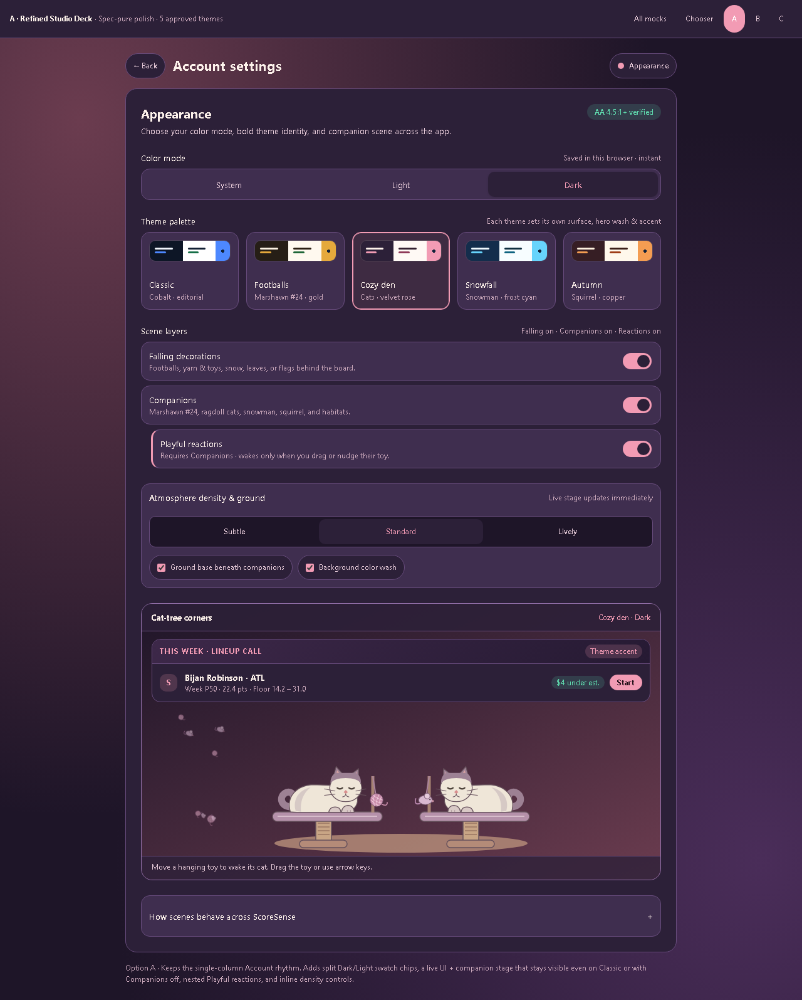
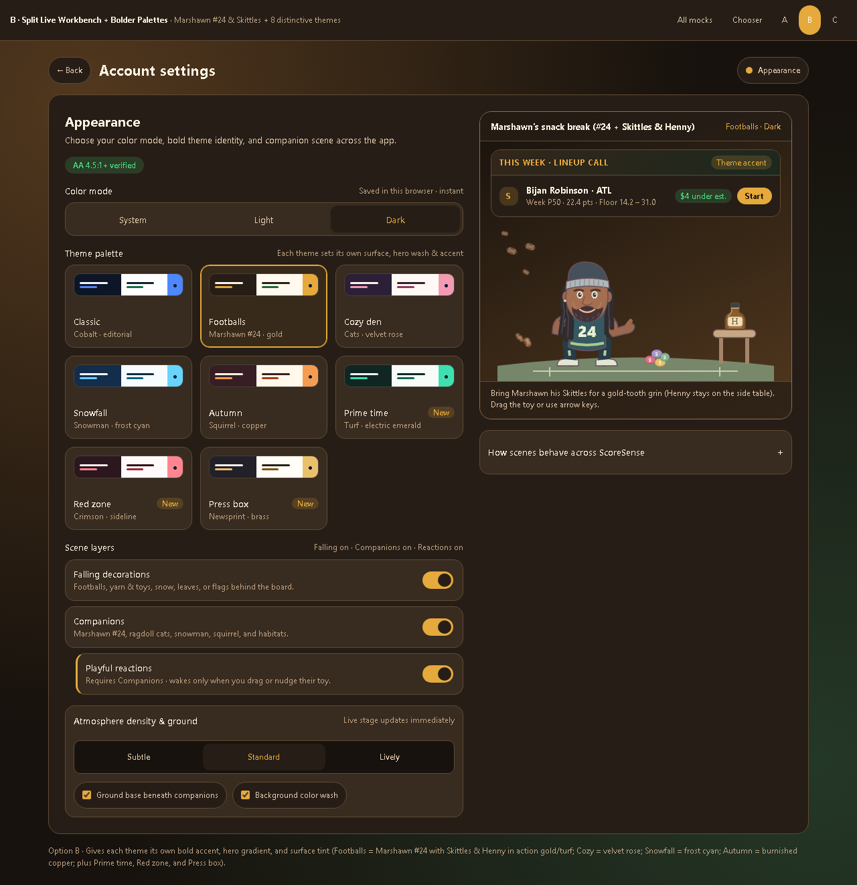
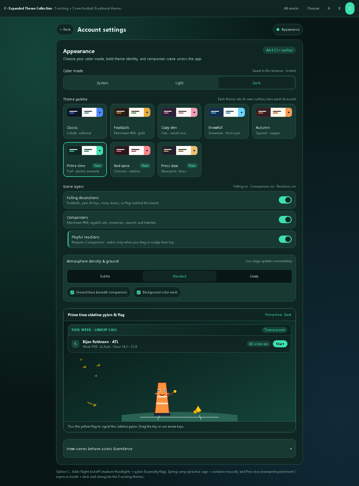

Color scheme & appearance options.
Each option preserves the approved light/dark architecture, independent layer switches, and toy-only companion physics while improving swatch clarity, live UI + scene previewing, and palette variety.
A · Refined Studio Deck
Spec-pure upgrade in the single-column Account layout: split Dark/Light swatch chips, live board + companion stage (even on Classic), nested Playful reactions, and inline density controls.

B · Split Live Workbench
Desktop two-column workbench: palette and layer switches on the left, sticky live UI sample + interactive companion stage on the right so you never scroll to check a toggle.

C · Expanded Collection (+3 Themes)
Adds Night kickoff (pylon & penalty flag), Spring camp (combine pup & ball), and Press box (newsprint / booth owl & press pass) to the 5 existing themes.
